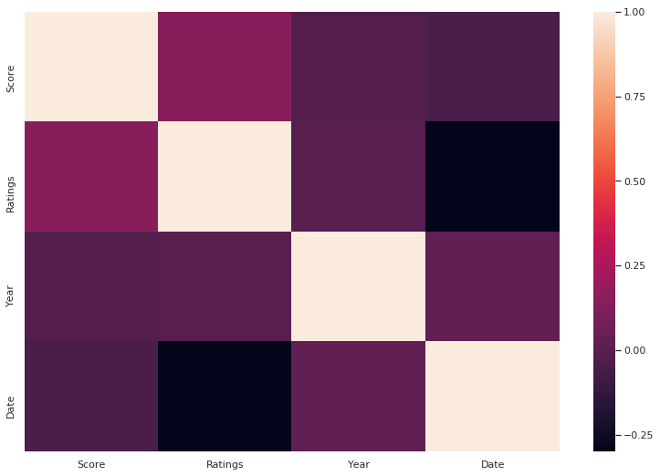
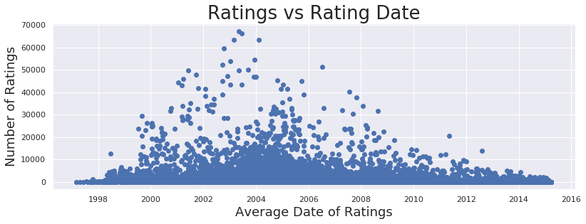
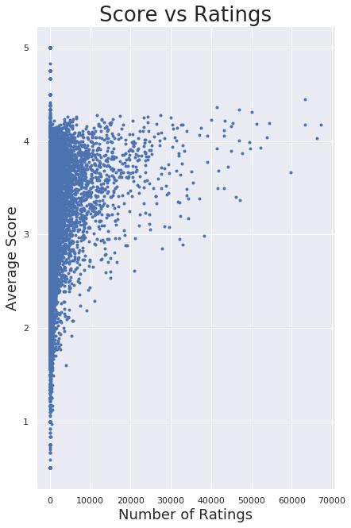

import sys
print(sys.executable)
from IPython.core.interactiveshell import InteractiveShell
InteractiveShell.ast_node_interactivity = "all"
InteractiveShell.colors = "Linux"
InteractiveShell.separate_in = 0
/home/jcmint/anaconda3/envs/learningenv/bin/pythonThe clustering tutorial was based on weather data and classifying them into hot or cold days based on 7-8 features. However, I wanted to try something on my own using the movies rating data. I wanted to 2-D graph movies by the number of raters and the average score, and plot. Then, I would use a third variable (the decade it was released) to color the points, to see if movies released in certain decades were more actively reviewed or had higher. A fourth variable, the average review timestamp, would be used as intensity for a heatmap for the color variable.
After assessing the data, I would then run the data through a cluster algoritm, including generating an elbow curve.
Installed seaborn from conda for leanringenv
from sklearn.preprocessing import StandardScaler
from sklearn.cluster import KMeans
import pandas as pd
import numpy as np
from itertools import cycle, islice
import matplotlib.pyplot as plt
from matplotlib import style
import seaborn as sns
sns.set(style="ticks", context="talk")
movies = pd.read_csv('../../../../data/w4pd/movies.csv')
ratings = pd.read_csv('../../../../data/w4pd/ratings.csv')movies.shape, ratings.shape
movies.head()
ratings.head()((27278, 3), (20000263, 4))| movieId | title | genres | |
|---|---|---|---|
| 0 | 1 | Toy Story (1995) | Adventure|Animation|Children|Comedy|Fantasy |
| 1 | 2 | Jumanji (1995) | Adventure|Children|Fantasy |
| 2 | 3 | Grumpier Old Men (1995) | Comedy|Romance |
| 3 | 4 | Waiting to Exhale (1995) | Comedy|Drama|Romance |
| 4 | 5 | Father of the Bride Part II (1995) | Comedy |
| userId | movieId | rating | timestamp | |
|---|---|---|---|---|
| 0 | 1 | 2 | 3.5 | 1112486027 |
| 1 | 1 | 29 | 3.5 | 1112484676 |
| 2 | 1 | 32 | 3.5 | 1112484819 |
| 3 | 1 | 47 | 3.5 | 1112484727 |
| 4 | 1 | 50 | 3.5 | 1112484580 |
Now I want to group the ratings
movie_ratings = ratings[['movieId', 'rating']].groupby('movieId').mean()
movie_counts = ratings[['movieId', 'rating']].groupby('movieId').count()
movie_timestamps = pd.to_datetime(ratings[['movieId', 'timestamp']].groupby('movieId').mean()['timestamp'], unit = 's').dt.dateprint("Timestamp range is ", movie_timestamps.min(), " to ", movie_timestamps.max())Timestamp range is 1997-03-02 to 2015-03-30Join all three on Movie ID
merged_1 = movie_ratings.merge(movie_counts, on = 'movieId', how='inner').merge(movie_timestamps, on = 'movieId', how='inner')
merged_1 = merged_1.merge(movies[['movieId', 'title']], on = 'movieId', how='inner')
merged_1.head()| movieId | rating_x | rating_y | timestamp | title | |
|---|---|---|---|---|---|
| 0 | 1 | 3.921240 | 49695 | 2003-05-11 | Toy Story (1995) |
| 1 | 2 | 3.211977 | 22243 | 2002-11-18 | Jumanji (1995) |
| 2 | 3 | 3.151040 | 12735 | 2000-05-30 | Grumpier Old Men (1995) |
| 3 | 4 | 2.861393 | 2756 | 1999-04-15 | Waiting to Exhale (1995) |
| 4 | 5 | 3.064592 | 12161 | 2000-06-26 | Father of the Bride Part II (1995) |
Next, extract the year from the title and bin into a decade
Title[['Name']], Year[['Year']] = merged_1['title'].str.extract('(.+?) \('), merged_1['title'].str.extract('(\d\d\d\d)')
merged_1 = pd.concat([merged_1, Title['Name'], Year['Year']], axis = 1, join = "inner")
merged_1.head()| movieId | rating_x | rating_y | timestamp | title | Name | Year | |
|---|---|---|---|---|---|---|---|
| 0 | 1 | 3.921240 | 49695 | 2003-05-11 | Toy Story (1995) | Toy Story | 1995 |
| 1 | 2 | 3.211977 | 22243 | 2002-11-18 | Jumanji (1995) | Jumanji | 1995 |
| 2 | 3 | 3.151040 | 12735 | 2000-05-30 | Grumpier Old Men (1995) | Grumpier Old Men | 1995 |
| 3 | 4 | 2.861393 | 2756 | 1999-04-15 | Waiting to Exhale (1995) | Waiting to Exhale | 1995 |
| 4 | 5 | 3.064592 | 12161 | 2000-06-26 | Father of the Bride Part II (1995) | Father of the Bride Part II | 1995 |
Finally, drop the title column since it's been split
del merged_1['title']
merged_1 = merged_1.rename(columns={merged_1.columns[1]: "Score", merged_1.columns[2] : "Ratings", merged_1.columns[3]:"Date"})
merged_1.head()| movieId | Score | Ratings | Date | Name | Year | |
|---|---|---|---|---|---|---|
| 0 | 1 | 3.921240 | 49695 | 2003-05-11 | Toy Story | 1995 |
| 1 | 2 | 3.211977 | 22243 | 2002-11-18 | Jumanji | 1995 |
| 2 | 3 | 3.151040 | 12735 | 2000-05-30 | Grumpier Old Men | 1995 |
| 3 | 4 | 2.861393 | 2756 | 1999-04-15 | Waiting to Exhale | 1995 |
| 4 | 5 | 3.064592 | 12161 | 2000-06-26 | Father of the Bride Part II | 1995 |
I need to actually hold onto the POSIX average rating timestamps so that I can convert them to numbers for analysis.
scaled_1 = merged_1.copy()
del scaled_1['Name']
del scaled_1['Date']
scaled_1 = scaled_1.merge(ratings[['movieId', 'timestamp']].groupby('movieId').mean().astype(int), on = 'movieId', how='inner')
del scaled_1['movieId']
scaled_1 = scaled_1.rename(columns={scaled_1.columns[3]: "Date"})
scaled_1.head()| Score | Ratings | Year | Date | |
|---|---|---|---|---|
| 0 | 3.921240 | 49695 | 1995 | 1052654098 |
| 1 | 3.211977 | 22243 | 1995 | 1037616295 |
| 2 | 3.151040 | 12735 | 1995 | 959648019 |
| 3 | 2.861393 | 2756 | 1995 | 924214411 |
| 4 | 3.064592 | 12161 | 1995 | 962016085 |
%%capture
scaled_1['Year'] = pd.to_numeric(scaled_1['Year'])
var_corr = scaled_1.corr()
normalized = StandardScaler().fit_transform(scaled_1)Finally, we can graph our data
sns.heatmap(var_corr)<matplotlib.axes._subplots.AxesSubplot at 0x7f7a67318c88>
fig, axis = plt.subplots()
fig.set_size_inches(11.7, 4)
axis.set_title('Ratings vs Rating Date',fontsize=26)
axis.set_xlabel('Average Date of Ratings',fontsize=18)
axis.set_ylabel('Number of Ratings',fontsize=18)
plt.plot_date(x='Date', y = 'Ratings', data = merged_1)
plt.show();
fig, axis = plt.subplots()
fig.set_size_inches(6, 10)
axis.set_title('Score vs Ratings',fontsize=26)
axis.set_xlabel('Number of Ratings',fontsize=18)
axis.set_ylabel('Average Score',fontsize=18)
plt.scatter(x='Ratings', y = 'Score', marker = '.', data = merged_1)
plt.show();

What's next?